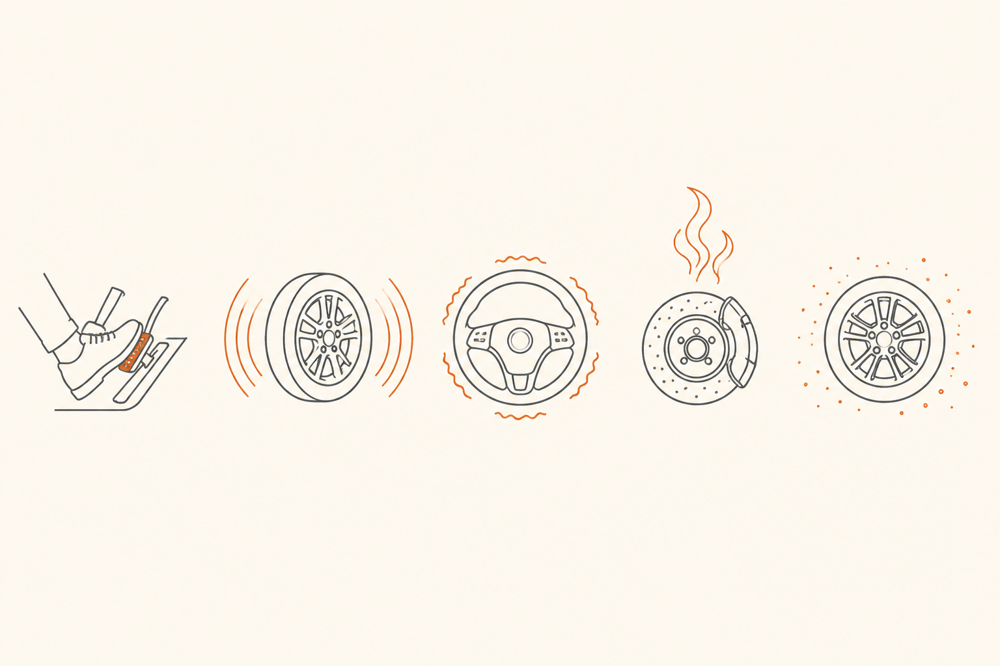

La frenada como experiencia de cliente
Has llegado a la última píldora. Hasta aquí hemos construido la maquinaria: hidráulica, fricción, ABS, regenerativa, mantenimiento. Toca subirse a otro plano: el del cliente, que no ve nada de eso. El cliente ve, oye, huele, siente. Y reclama. Esta píldora junta todo lo anterior y lo traduce a tu idioma.
Las cinco dimensiones perceptibles
Toda la complejidad de un sistema de frenos llega al cliente por exactamente cinco canales sensoriales. No hay un sexto, y dominar estos cinco te da la mayor parte del trabajo CX hecho.

Pedal feel: la firma invisible de la marca
Aquí entra una idea poco intuitiva pero crítica para tu rol. El "tacto" del pedal — cómo se siente al pisarlo — no es solo una consecuencia técnica. Es una decisión de marca. Dos coches con frenos físicamente parecidos pueden sentirse completamente distintos al pisar, porque el fabricante ha calibrado la respuesta del servofreno y el reparto regen-mecánico de forma diferente.
Cuando un cliente cambia de marca y dice "este coche frena raro", casi nunca quiere decir "frena mal". Quiere decir "frena distinto". Reconocer eso desde CX evita el reflejo de buscar un fallo donde solo hay una calibración diferente — y permite explicarle por qué siente lo que siente.
Auto Hold y freno eléctrico: dos cambios silenciosos
Dos asistencias modernas que cambian la experiencia sin que el cliente las pida explícitamente:
Auto Hold: cuando paras el coche del todo (semáforo, atasco), el sistema mantiene la presión del freno automáticamente sin que tengas que seguir pisando. Sueltas el pedal y el coche no se mueve hasta que aceleras. Para clientes que vienen de toda la vida pisando el freno en cada parada, es una pequeña liberación cotidiana. La conversación CX ideal es enseñarles dónde se activa (botón con "A") y dejar que decidan si lo prefieren.
Freno eléctrico de estacionamiento: el viejo "freno de mano" mecánico ha sido reemplazado en muchos coches por un botón. Tira del cable electrónicamente. La diferencia para el cliente: ya no se acuerda de quitarlo (al menos no como antes), porque el sistema suele soltarlo solo al acelerar. Pero también, si nunca lo activa, no sabe dónde está cuando lo necesita. Vale la pena enseñárselo en la entrega.
Diccionario operativo de quejas
Aquí está la pieza más útil de todo el curso para tu día a día. Una lista de quejas reales del cliente, con su traducción técnica y la acción CX recomendada. Filtra por dimensión perceptible si quieres ver solo un tipo.
Cómo se mide la satisfacción de frenada
Para cerrar el lado profesional. La frenada percibida no es solo conversación de taller: hay métricas que la cuantifican y que probablemente conoces o usas:
Sales con una idea raíz que no se olvida: frenar es convertir movimiento en calor por fricción y disiparlo, salvo cuando puede recuperarse como electricidad. Conoces la hidráulica que multiplica tu pierna, la geometría de la fricción, la pieza sacrificable, la electrónica que supervisa y la otra forma de frenar. Sabes diferenciar mantenimiento rutinario de urgencia, y tienes un diccionario operativo para traducir lo que el cliente vive a lo que el sistema hace.
El siguiente paso es probar lo aprendido con la evaluación final del curso.
fácil Nombra las cinco dimensiones perceptibles de la frenada y un ejemplo de queja típica de cada una.
Tacto: "El pedal está blando" / "se hunde" / "duro como un ladrillo".
Sonido: "Chirría al frenar" / "ruido metálico continuo".
Vibración: "El volante tiembla al frenar" / "el pedal me da golpes raros".
Olor: "Huele a quemado tras bajar el puerto" / "olor intenso a freno en plano".
Polvo / visual: "Las llantas se me ponen negras" / "los discos están oxidados".
medio Un cliente que cambia de SEAT León a CUPRA Born te dice: "este coche frena rarísimo, parece que va a tope todo el rato". ¿Qué dos cosas distintas pueden estar pasando, y cómo se las explicas?
Pueden estar pasando dos cosas que se solapan:
1) Pedal feel distinto: el CUPRA Born tiene calibrado más firme y deportivo que un SEAT León convencional, por decisión de marca. Donde antes pisaba "lineal y suave", ahora siente más respuesta inicial y más mordida.
2) Frenada regenerativa: el Born frena solo al levantar el acelerador, gracias a la regenerativa. Esa "frenada sin tocar pedal" es la que percibe como "va a tope todo el rato". No es el freno: es el motor eléctrico actuando como generador.
Cómo se lo explicas: "Has cambiado de calibrado y de tecnología a la vez. El Born tiene un pedal más firme por carácter de marca, y además recupera energía al levantar el pie en lugar de inercia libre. Te enseño cómo ajustar el nivel de regeneración si quieres una sensación más cercana a tu León. La mayoría de clientes adapta el cuerpo en una semana y muchos acaban prefiriéndolo."
Resultado CX: una queja se convierte en una conversación pedagógica con opciones reales. El cliente se va con conocimiento, no con la sensación de "este coche es raro".
reto Si tuvieras que diseñar una "tarjeta de bienvenida CX" sobre los frenos del CUPRA Born para entregar al cliente al recoger el coche, ¿qué cuatro mensajes pondrías y por qué?
Una versión posible, anticipando las dudas más frecuentes:
1) "Tu coche frena al levantar el acelerador. Es la frenada regenerativa."
Por qué: la mayor sorpresa de un cliente que viene de combustión. Anticiparla evita la queja "frena raro" en los primeros días.
2) "Es normal ver óxido superficial en los discos si dejas el coche varios días al exterior. Se va con un par de frenadas firmes."
Por qué: la queja-tipo del eléctrico. Anticiparla convierte un posible reclamación en una explicación que da tranquilidad.
3) "Tienes Auto Hold: pulsa el botón "A" cerca del freno de mano. Cuando estás parado, el coche se queda quieto sin pisar. En atascos lo agradecerás."
Por qué: una asistencia útil que el cliente no descubre solo. Activarla en la entrega = momento "wow" de bajo coste.
4) "Si necesitas configurar la intensidad de la regeneración, te lo enseñamos en la entrega o cuando quieras pasarte. No tienes que vivir con la opción por defecto."
Por qué: agencia. Le quitas la sensación de "tengo que aguantar lo que el coche hace" y la conviertes en "tengo opciones que controlo yo".
El conjunto: cuatro mensajes que cubren las dos quejas-tipo más comunes, una asistencia útil y una invitación a personalizar. Diez minutos en la entrega ahorran semanas de tickets de servicio.